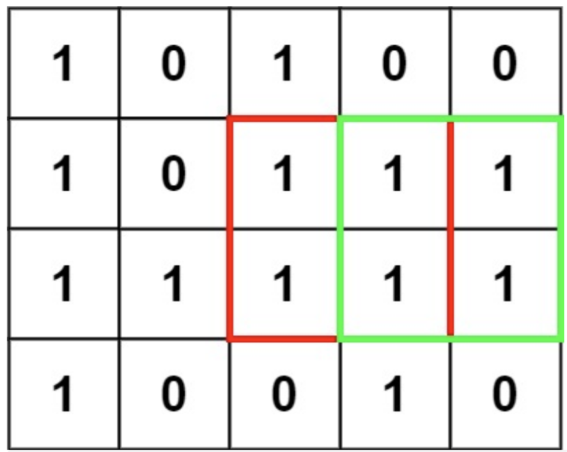

动态规划有两个特性：子问题重叠，最优子结构。
在一个由 '0' 和 '1' 组成的二维矩阵内，找到只包含 '1' 的最大正方形，并返回其面积。

输入：matrix = [["1","0","1","0","0"],["1","0","1","1","1"],["1","1","1","1","1"],["1","0","0","1","0"]]
输出: 1
一开始认为要沿着副对角线，然后寻找matrix[i][j]和matrix[i-1][j-1]之间的关系。后来发现，一行行扫描即可。但是这里的转移方程，想了三次才成功，正解为:
$$ dp[i][j] = min(dp[i-1][j-1], dp[i-1][j], dp[i][j-1])+1 $$
class Solution:
def maximalSquare(self, matrix: List[List[str]]) -> int:
rows = len(matrix)
cols = len(matrix[0])
dp = [[0]*cols for _ in range(rows)]
for i in range(rows):
for j in range(cols):
if i == 0 or j == 0:
dp[i][j] = int(matrix[i][j])
else:
if matrix[i][j] == '1':
dp[i][j] = min(dp[i-1][j], dp[i][j-1], dp[i-1][j-1]) + 1
else:
dp[i][j] = 0
max_edge = max([max(x) for x in dp])
return max_edge**2